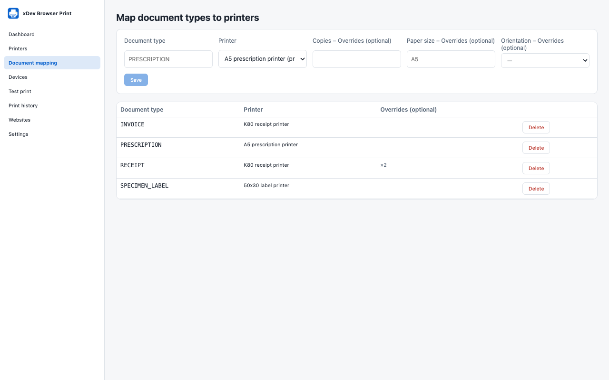

A printer for each document type
Create printer profiles for A4, A5, K80 and K58 receipts or barcode and label printers, then map each document type to one. Copies, paper size and orientation can be overridden per mapping.

xDev Browser Print
A Chrome extension and a TypeScript SDK that let web apps for clinics, pharmacies and shops print prescriptions, invoices, receipts and labels on the printer set for each document type. No backend, no native app and no cloud print service.
In Chrome Web Store review
Free and open source under the MIT licence. No account. No tracking.

Features
The web app sends a document type such as PRESCRIPTION or RECEIPT. An administrator decides once which printer handles it.
Create printer profiles for A4, A5, K80 and K58 receipts or barcode and label printers, then map each document type to one. Copies, paper size and orientation can be overridden per mapping.
PDF and HTML documents open Chrome’s print dialog, already set to the right paper size and orientation.
Printers that accept raw commands (ESC/POS, ZPL, TSPL) print directly over WebUSB or Web Serial, only on devices you granted on the Devices screen.
Each web app is allowed by its exact address, with no wildcards, and Chrome asks for access to that one site. Permissions are per site: read the configuration, print, change mappings. You can also ask before every print.
Site HTML is sanitised and rendered in a sandboxed frame. Each site has a rate limit and a size limit, and a repeated request with the same key does not print twice.
The web app connects, prints a PDF, HTML or raw commands, and follows each job’s state with the @tdduydev/browser-print SDK or its useBrowserPrint hook.
Dashboard, printers, document mapping, devices, test print, print history, websites and settings, in English and Vietnamese.
Chrome does not let extensions list or choose system printers, or report whether the user printed or cancelled. PDF and HTML always use the dialog unless an administrator starts Chrome with --kiosk-printing.
Privacy
The extension makes no network requests of its own. It has no server, no account, no analytics, no ads and no tracking. A document goes only to your printer.
Read the privacy policyGet started
Manifest V3, for Google Chrome 118 or later on Windows 10 and 11, macOS and Linux. It has been submitted to the Chrome Web Store and is waiting for Google’s review; until then, developers can build it from source and load it unpacked.
TypeScript, ESM and CommonJS, with no backend dependency. The useBrowserPrint hook works with React 18 or later.
The extension, the SDK, an example React app and the design documents are on GitHub at github.com/tdduydev/xdev-browser-print.
The extension is available in English and Vietnamese.
Help and legal
What the extension does with data. In short: documents stay on your computer.
PrivacyContact us and find answers to common questions.
SupportQuestions or feedback? Email duy@xdev.asia